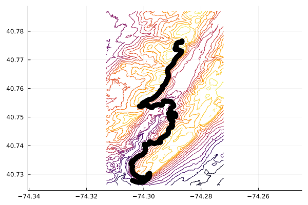

2.1 Primary hiking trails of the SMR
The SMR Trail Guide is a 60-page guide, describing the 50-plus miles of trails in the South Mountain Reservation with details of recommended hikes. What follows is a very brief description.
lenape_north = """
lat,long,a,b
-74.2866646,40.7766004,0,156.9368438720703
-74.286694,40.7764925,12.250670697724662,158.5272369384766
-74.2866332,40.7764196,21.838124521334535,158.7777709960938
-74.2866879,40.7761748,49.44557803038868,161.5828552246094
-74.2869192,40.7761323,69.48715482875535,163.1677551269531
-74.2871355,40.7760745,88.80126394818956,164.6128540039062
-74.2874138,40.7760733,112.23571252941184,166.1541442871094
-74.287677,40.7761336,135.39035361117,165.6542053222656
-74.2879484,40.7760659,159.45134097921172,165.9420776367188
-74.2882525,40.7759238,189.54057063157975,167.6710510253906
-74.2883253,40.7757643,208.3056785459296,169.5810699462891
-74.2884685,40.7756034,229.8810321166041,171.0963287353516
-74.288605,40.7754613,249.420146167734,172.0184631347656
-74.2887,40.7752748,271.64739392269485,173.6490783691406
-74.2887085,40.7750887,292.35314426176467,175.1121978759766
-74.2886929,40.7748913,314.34229467974154,176.1620788574219
-74.2886652,40.7746059,346.1629302529505,177.5010528564453
-74.2887638,40.7744273,367.68807506773226,178.1550750732422
-74.288791,40.774379,373.5267892563058,178.2113037109375
-74.2890191,40.7740789,412.029513645446,178.0513305664062
-74.2890726,40.7738805,434.5458778421511,177.9201202392578
-74.2890204,40.7737156,453.401432434971,178.133544921875
-74.2887982,40.7735561,479.1822130333666,178.9001922607422
-74.2885372,40.773518,501.5649795467373,178.7996368408203
-74.2882557,40.773568,525.9126811230782,178.4622039794922
-74.2879789,40.7735203,549.8171900218557,177.7257537841797
-74.2877022,40.7734326,575.0758376975149,177.0539245605469
-74.2874893,40.7733351,596.0268602544677,177.6184692382812
-74.2872789,40.7732386,616.7402277522569,178.1279144287109
-74.2870915,40.7731528,635.1806246873214,178.4441375732422
-74.2870762,40.7731494,636.523331852354,178.4625244140625
-74.2867544,40.7730566,665.5197153604759,178.0821075439453
-74.2867283,40.7729261,680.1961522459027,177.6796417236328
-74.286771,40.772849,689.4927958099863,177.6625518798828
-74.286873,40.77264,714.269016624036,177.9040222167969
-74.287057,40.772413,743.8865429985738,177.8545989990234
-74.287183,40.772268,763.1878134727395,177.7627563476562
-74.287375,40.772041,793.1633186481354,176.5066680908203
-74.287455,40.771918,808.4094211752306,175.8107147216797
-74.287513,40.771835,818.8512968100069,175.2388763427734
-74.287558,40.771782,825.8578078811827,174.9468383789062
-74.287574,40.771759,828.7484983057951,174.7558441162109
-74.287622,40.771705,835.9867773836662,174.4462127685547
-74.287794,40.771543,859.1012456781455,173.1915588378906
-74.287979,40.771376,883.3402630056237,171.7920837402344
-74.288072,40.771309,894.1493680781613,171.3730621337891
-74.288238,40.771165,915.404887183144,169.4928283691406
-74.288401,40.771022,936.4108418895269,167.863037109375
-74.288516,40.770871,955.7939094344503,165.4988098144531
-74.288643,40.770692,978.3891242502647,163.1366119384766
-74.288768,40.770537,998.5846150919937,161.8108520507812
-74.288914,40.770338,1023.8987042598125,160.7407073974609
-74.289023,40.770197,1042.0665414740363,159.9684600830078
-74.289135,40.770026,1063.2915838140457,159.4584045410156
-74.289254,40.769893,1081.1560049179368,158.6562652587891
-74.2893292,40.7696821,1105.447027817291,158.0213775634766
-74.2894265,40.769472,1130.2043560752438,158.73095703125
-74.2894642,40.769283,1151.4586517388022,158.1536560058594
-74.2894793,40.76919,1161.8776699433922,158.0622711181641
-74.289473,40.769025,1180.2325020650867,157.9454650878906
-74.28953,40.768869,1198.2308200156651,158.0043334960938
-74.289677,40.768707,1220.0880485323387,157.5789947509766
-74.289857,40.768568,1241.7368436298518,157.0836791992188
-74.28997,40.768406,1262.109536816662,156.5995178222656
-74.290015,40.768335,1270.866809631514,156.2741241455078
-74.290153,40.768176,1292.024384613267,155.1999664306641
-74.290348,40.767943,1322.6988453276938,152.5007171630859
-74.290387,40.767865,1331.9730881435687,152
-74.290567,40.767703,1355.5161202705644,150.6632232666016
-74.290851,40.767546,1385.1268342394092,149.2783813476562
-74.290941,40.767437,1399.4218415654025,149.2598724365234
-74.291044,40.76731,1415.9948749617326,148.8162536621094
-74.291098,40.767237,1425.299197490623,148.6080169677734
-74.291109,40.767233,1426.3268123094535,148.5619964599609
-74.291151,40.767184,1432.822769948419,148.4497680664062
-74.291245,40.767114,1443.9246833874706,148.4561157226562
-74.291448,40.767015,1464.2581283023594,148.5115203857422
-74.291525,40.766878,1480.8145811164543,149.5281066894531
-74.2915351,40.7667917,1490.448326527816,149.8823394775391
-74.2915351,40.7667917,1490.448326527816,149.8823394775391
-74.2915651,40.7665039,1522.5498022190125,147.1004791259766
-74.2915651,40.7665039,1522.5498022190125,147.1004791259766
-74.2915804,40.7664246,1531.461205910483,149.9880218505859
-74.2916087,40.7662208,1554.2477158990275,151.8821258544922
-74.2916207,40.7661119,1566.3989416439417,152.5794067382812
-74.2916314,40.7660147,1577.244588697935,153.5809478759766
-74.2916207,40.7658325,1597.5243348073236,155.405517578125
-74.2916207,40.7656603,1616.6721011756847,156.7569274902344
-74.2916149,40.7655403,1630.024429959546,157.8206024169922
-74.2915404,40.7653189,1655.4299270249771,159.3347473144531
-74.2915137,40.7651905,1669.8833442011125,160.0849456787109
-74.2914382,40.7649755,1694.6213831560979,161.5356903076172
-74.2914469,40.7647733,1717.1169328753028,163.9108734130859
-74.2914388,40.7646146,1734.7767482896124,163.4517364501953
-74.2914107,40.7644575,1752.4050452917934,164.2100830078125
-74.2913922,40.7642917,1770.9068833645897,165.5536956787109
-74.29144,40.763909,1813.651175595389,168.9109954833984
-74.2915381,40.7636769,1840.749713146563,170.9745941162109
-74.2917382,40.7634532,1870.7952869116375,175.1828765869141
-74.2917758,40.7632507,1893.5338440262385,175.9728393554688
-74.2918133,40.763049,1916.183140867184,174.6969451904297
-74.291912,40.7628813,1936.5994231415652,173.9784545898438
-74.2920225,40.762703,1958.5010736906406,173.6839599609375
-74.2920863,40.762523,1979.2248842978613,172.2910308837891
-74.2921681,40.7622754,2007.605624842317,168.8641662597656
-74.2922695,40.7621117,2027.712050937338,167.2461090087891
-74.2923631,40.7619643,2045.8994405446037,166.1927795410156
-74.2923417,40.761776,2066.914876186628,162.7577972412109
-74.2924733,40.7616059,2088.837405913505,161.5196990966797
-74.2925923,40.7615148,2103.087480936252,161.2661743164062
-74.2926977,40.7613586,2122.5931902555517,159.6943511962891
-74.292866,40.7611758,2147.3739765993146,158.1952056884766
-74.293046,40.7610788,2165.9795458987373,157.9488830566406
-74.2932568,40.7608868,2193.7466740605,156.8519897460938
-74.2934074,40.7607889,2210.4616544004075,157.2043762207031
-74.2935125,40.7605651,2236.8745484513115,156.9976196289062
-74.2935429,40.7603916,2256.3360313404346,157.5537872314453
-74.293493,40.7601708,2281.2449921185835,156.4830474853516
-74.2935006,40.7599492,2305.894100665989,156.9974517822266
-74.2935934,40.7597538,2328.9846772606124,158.5341339111328
-74.2937227,40.7595769,2351.4685115924476,160.4599914550781
-74.29389,40.7595461,2365.969628486495,162.5299835205078
-74.2941287,40.7593726,2393.833379990466,164.8241271972656
-74.2941822,40.7592801,2405.062662664349,165.8920745849609
-74.2943629,40.7590473,2435.091488775824,169.0598907470703
-74.2943866,40.7588881,2452.9059118864907,169.7711944580078
-74.2944393,40.7587213,2471.976965940523,168.3622589111328
-74.2945616,40.7585988,2489.0547377258526,167.7252197265625
-74.2946841,40.7584761,2506.1604196546377,166.4564819335938
-74.2949399,40.7582154,2542.278705211841,164.3378753662109
-74.2950761,40.7580787,2561.3221036498553,163.2761993408203
-74.2952622,40.7577924,2596.806895829634,160.9899444580078
-74.2954003,40.7576552,2615.9913510606216,160.8681182861328
-74.295529,40.7575329,2633.382286762997,160.4656219482422
-74.2957491,40.7573486,2661.016522117784,160.7445373535156
-74.2958709,40.7572787,2673.8873774485032,161.2178192138672
-74.2960951,40.7570938,2701.8036077566176,161.0608062744141
-74.2963512,40.7568621,2735.405419060077,159.9429016113281
-74.296517,40.7567673,2752.9023709547228,158.9814910888672
-74.2967364,40.7565955,2779.4813014521587,157.5002593994141
-74.2970293,40.7564077,2811.803417740869,157.1001129150391
-74.2972396,40.7563046,2832.9030231437227,155.9678649902344
-74.2974836,40.75623,2855.0659070079564,156.7513580322266
-74.2977038,40.7561852,2874.270580600701,157.8136596679688
-74.2980251,40.7561521,2901.582670867415,160.4697723388672
-74.2982383,40.7560841,2921.067373381384,161.7117767333984
-74.298443,40.7559546,2943.5314189503147,162.0097961425781
-74.2987283,40.7558291,2971.3202682374035,162.7646636962891
-74.2989741,40.7556893,2997.210306576425,162.9410705566406
-74.2992263,40.7555083,3026.47337421643,162.1981964111328
-74.2993957,40.7554402,3042.6268531262085,161.8268432617188
-74.2996485,40.7552407,3073.37609441055,159.3341522216797
-74.299931,40.7551666,3098.557467451051,159.3417816162109
-74.30019,40.7549494,3131.1032337334896,155.7662200927734
-74.3003953,40.7548839,3149.8670802798247,155.9355773925781
-74.3004892,40.7546735,3174.5632884923184,153.2689208984375
-74.3005366,40.7544505,3199.6791308275683,151.7616424560547
-74.3007378,40.7542468,3227.967946280024,147.7865295410156
-74.3009562,40.7540741,3254.5610429211633,147.1604614257812
-74.3011428,40.7538129,3287.585408066394,143.9731292724609
-74.3014753,40.7538177,3315.5978159734486,145.2627563476562
-74.3014753,40.7538177,3315.5978159734486,145.2627563476562
-74.301247,40.7537031,3338.666998609694,142.0727996826172
-74.3009438,40.7537067,3364.209486943851,140.3494720458984
-74.3006608,40.7538124,3390.787341592052,139.0308685302734
-74.3004168,40.753907,3413.8755386911525,139.1806030273438
-74.3001034,40.754021,3443.1597200093397,138.3379516601562
-74.2998217,40.7541405,3470.3551906237567,139.5567169189453
-74.2995171,40.7542526,3498.879936806798,136.9771881103516
-74.2992712,40.7542826,3519.8594854161574,135.1578369140625
-74.2989942,40.7542834,3543.191907034411,131.1612854003906
-74.2987433,40.7542522,3564.608571956853,127.8975143432617
-74.298613,40.754201,3576.9727313336766,126.4884338378906
-74.298613,40.754201,3576.9727313336766,126.4884338378906
-74.298561,40.754122,3586.788569580504,125.2890396118164
-74.298505,40.754049,3596.1768356624484,124.1917037963867
-74.298435,40.753972,3606.572695398068,122.4730606079102
-74.298402,40.753872,3618.034356733651,120.5384216308594
-74.298416,40.753818,3624.153586725506,119.8848571777344
-74.298393,40.753805,3626.570793552515,119.5148391723633
-74.298233,40.753717,3643.2256624912616,118.2125930786133
-74.298113,40.753706,3653.407320652596,117.8689193725586
-74.298079,40.753714,3656.4062043439153,117.6361846923828
-74.297548,40.753434,3710.903216730908,110.3360443115234
-74.297364,40.753392,3727.0904344028054,108.5644760131836
-74.2973338,40.7533463,3732.7732034130004,108.1430816650391
-74.2972265,40.7533169,3742.3844783833365,107.5640869140625
-74.297087,40.753356,3754.913545683342,107.3966903686523
-74.2970438,40.7533584,3758.5621895529703,106.9932174682617
-74.296979,40.753397,3765.505922317939,106.7497177124023
-74.29689,40.753533,3782.3846475639775,107.3554840087891
-74.296812,40.753661,3798.0608681252033,108.1323471069336
-74.296718,40.753785,3813.9607527865096,108.7673873901367
-74.296627,40.753874,3826.4784361324864,109.1950912475586
-74.296514,40.753973,3841.0310971191525,109.4696807861328
-74.296377,40.754026,3853.988680440809,109.3857421875
-74.296184,40.754049,3870.44544706457,108.3090362548828
-74.29596,40.754119,3890.8559127642234,108.1337585449219
-74.295761,40.754191,3909.431909691255,108.1046295166016
-74.295542,40.754277,3930.2100551237845,107.1578903198242
-74.295345,40.754276,3946.8041247982374,106.3415069580078
-74.295177,40.754295,3961.1119344829176,105.4238739013672
-74.2951,40.754358,3970.6586766938217,104.6267318725586
-74.294976,40.754381,3981.4119786880256,104.0040283203125
-74.294943,40.754379,3984.2005113238665,103.8368225097656
-74.294873,40.754362,3990.3923450657085,103.7001495361328
-74.294805,40.754359,3996.1298172092274,103.5664672851562
-74.294687,40.754349,4006.1311828251046,103.1138458251953
-74.294537,40.754269,4021.5833502291607,102.378547668457
-74.294341,40.754248,4038.2571395015607,101.550895690918
-74.294228,40.754249,4047.77600504826,101.5721130371094
-74.294146,40.75427,4055.067069911028,101.2571258544922
-74.294043,40.754277,4063.777808515193,100.6511535644531
-74.293997,40.75418,4075.2385633434624,100.1333465576172
-74.293672,40.75418,4102.613991724567,97.44237518310547
-74.293539,40.754324,4122.15600642647,97.4075698852539
-74.293442,40.754447,4138.087626972878,97.14598846435547
-74.29342,40.754555,4150.238812108921,97.15312957763672
-74.293397,40.754677,4163.942229377548,96.79075622558594
-74.293319,40.754787,4177.826526474512,96.85504913330078
-74.2933093,40.7549621,4197.313893651949,97.14441680908203
-74.2931914,40.7550903,4214.687205020829,96.7574691772461
-74.2931359,40.7552002,4227.771170659734,96.1690673828125
-74.293124,40.75528,4236.70095950208,95.71766662597656
-74.293142,40.755375,4247.372727316118,95.50678253173828
-74.293163,40.7554692,4257.995591746401,95.38179779052734
-74.2931806,40.7555174,4263.556431405128,95.52769470214844
-74.2930826,40.7555402,4272.191563524664,95.54780578613281
-74.2930283,40.7555572,4277.140512162299,95.22270965576172
-74.2929292,40.7555853,4286.053376590469,94.36112213134766
-74.2928114,40.7556067,4296.257050640648,94.03639221191406
-74.2927408,40.7556127,4302.241016754209,93.4782943725586
-74.2926921,40.7556257,4306.590279489486,92.79499053955078
-74.2926528,40.7556602,4311.657267262444,91.87053680419922
-74.2926104,40.7556888,4316.439330230287,90.47251892089844
-74.2925696,40.7557042,4320.278923477907,88.88139343261719
-74.2925272,40.7556876,4324.299087074406,87.61898040771484
-74.2924927,40.7556674,4327.971910250889,86.59037017822266
-74.2924503,40.755646,4332.263411252022,85.56660461425781
-74.2924377,40.7556222,4335.114726865233,85.12378692626953
-74.2924377,40.7555877,4338.950951834266,84.91676330566406
-74.2924346,40.7555365,4344.650116846565,84.64923095703125
-74.2924236,40.755502,4348.596645424344,84.50263977050781
-74.2923562,40.7554961,4354.3115563852725,83.9544677734375
-74.2923562,40.7554961,4354.3115563852725,83.9544677734375
-74.2922566,40.7554928,4362.708927478567,84.12113952636719
-74.2922566,40.7554928,4362.708927478567,84.12113952636719
-74.292046,40.7555015,4380.474212607837,84.63755798339844
-74.2919414,40.7555032,4389.286741323851,84.90694427490234
-74.2918432,40.7555089,4397.582415165678,85.54780578613281
-74.291509,40.7555359,4425.891857983801,86.16326904296875
-74.2914537,40.7555243,4430.725091406662,86.20843505859375
-74.2914085,40.7555117,4434.781917071849,86.2316665649414
-74.2912529,40.75548,4448.353897435635,86.81033325195312
-74.2911267,40.7554856,4459.002001369384,89.23129272460938
-74.2911267,40.7554856,4459.002001369384,89.23129272460938
-74.290913,40.755476,4477.033671022027,90.92166900634766
-74.2908,40.755468,4486.59319080587,91.11058807373047
-74.290673,40.755452,4497.4373980507435,91.20319366455078
-74.290543,40.755427,4508.73471651245,91.64598846435547
-74.2904602,40.7554024,4516.226249754131,93.22599029541016
-74.290388,40.755341,4525.369387435728,95.04484558105469
-74.29028,40.755233,4540.434950001193,96.3081283569336
-74.290229,40.755184,4547.373274892045,96.7446517944336
-74.290202,40.755134,4553.380180453396,97.3239517211914
-74.290155,40.7550641,4562.1028331882435,98.81974792480469
-74.2899249,40.7547618,4600.904408255208,98.2763442993164
-74.2898865,40.7547028,4608.218918773557,97.86505126953125
-74.2898007,40.7545844,4623.237583188565,97.31148529052734
-74.2897535,40.7544918,4634.275130888912,97.34754943847656
-74.2896706,40.7543775,4648.776617302984,97.51689910888672
-74.2896197,40.7543034,4658.064884632777,97.77139282226562
-74.2896005,40.7541715,4672.820391596953,98.364013671875
-74.2896154,40.7540459,4686.842753830417,98.73151397705078
-74.2895835,40.7539799,4694.658057175901,99.19990539550781
-74.2895177,40.7538737,4707.702955426715,100.0928497314453
-74.2895177,40.7538737,4707.702955426715,100.0928497314453
-74.289788,40.7536377,4742.445265423391,98.71863555908203
-74.2898921,40.7535637,4754.470071466544,98.70094299316406
-74.2898921,40.7535637,4754.470071466544,98.70094299316406
-74.2903311,40.7532782,4803.206232973356,98.78182220458984
-74.2903311,40.7532782,4803.206232973356,98.78182220458984
-74.2904583,40.7531505,4820.994668451581,97.15168762207031
-74.2906325,40.752997,4843.5033742282,96.30287170410156
-74.2906858,40.7528085,4864.939064800851,95.22779083251953
-74.29073,40.7525738,4891.3007537206995,94.15503692626953
-74.2907065,40.7523338,4918.06085081276,93.6391372680664
-74.2906508,40.7521934,4934.362410997202,93.78347778320312
The [Lenape Trail](https://en.wikipedia.org/wiki/Lenape_Trail) was established in 1982 and connects may parks and reservations through Essex County. Its longest section runs through the SMR from Locust Grove to Route 10 (south to north).
```{julia}
#| echo: false
#| eval: false
somo = CSV.read("somo-400-600.csv", DataFrame)
n = CSV.read(Lenape_north.csv, DataFrame)
s = CSV.read(Lenape_south.csv, DataFrame)
lenape=vcat(n,s)
D = Dict()
for (x,y,e) ∈ zip(somo.x, somo.y, somo.elevation)
D[(x,y)] = e
end
f(x,y) = D[(x,y)]
contour(sort(unique(somo.x)), sort(unique(somo.y)), f;
aspect_ratio=:equal,
legend=false)
plot!(lenape.long, lenape.lat, line=(:black, 10))
In addition to the Lenape trail, the following main trails are blazed
- the white-blazed Rahway Trail (with part of it known as the Fairy Trail)
- the red-blazed Swampy Trail
- The blue-blazed Elmdale Trail
- The red-blazed Oakdale Trail
- The green- and white-blazed Mayapple loop
- The orange-blazed Turtle Back Trail
The Mayapple and Turtle Back trails form loops; the Oakdale and Lenape trail; the Elmdale and Dogwood trail form a loop; and the Swampy, Summit, Openwood, Rahway form a loop within the five main areas, partitioned by South Orange Avenue, Northfield Avenue and Brookside Drive and Cherry Lane
There are other connector trails carrying the colors of both trails that combine these loops, among some other trails.


{kind=link}